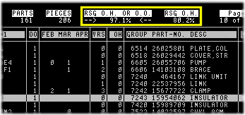

- remote -
|
. In particular, the treatment of different image data sets in multiple combinations with optimum degree of geometric accuracy is required for the exact geographic location of individual ground features, especially in mountainous regions. Moreover, multisensor remote sensing data have to be made available to be used in geographic information systems or environmental monitoring systems. Hence, based on many years of research in the field of remote sensing, the Institute for Digital Image Processing of JOANNEUM RESEARCH has developed RSG - the Remote Sensing software package Graz. The RSG software package is designed as comprehensive and versatile as possible for geometric processing and quality assessment of digital multisensor remote sensing data. |
A community dialogue is the first step in identifying issues and opportunities within a community that can ultimately lead to a higher quality of life. Agricultural Rural Minority Language Community Planning Initiative - AAFC and the Department of Canadian Heritage (DCH) have developed an Initiative to support agricultural rural minority language communities across the country in the production of community development plans. Checklist of Rural Lens Considerations - The Rural Lens raises awareness of rural and remote issues across federal government organizations by asking them to assess the effect of new policies, programs and services on Canadians living in rural and remote areas. Outlines the progress accomplished on each of the 54 "next steps" contained in the Rural Action Plan. Rural Youth Forum Dialogue - Live Chat with Andy Mitchell - Transcript What's New on the Site Community Dialogue Toolkit - A community dialogue is the first step in identifying issues and opportunities within a community that can ultimately lead to a higher quality of life.
|  |
|
Sipus, 1996, RCS of Dipoles Used for SAR Calibration. School of Electrical and Compute Engineering, Chalmers University of Technology, Goeteborg. In Sensors and Environmental Applications of Remote Sensing (Proc. , 1995, Measurement with the CARABAS SAR sensor during BEERS-94. Askne, 1996, The Analysis of the Optical Flow Model Applied to the Motion Estimation of Sea Ice from ERS-1 SAR Image Sequence. |
|
Now is the time to position yourself for success on the Internet. . You are one click away from any of these exclusive online communities of location and remote service companies. Top production companies, who wish to leverage the Web to develop new client relationships and increase revenues cost effectively, are invited to apply for membership in any of the appropriate communities. All communities are limited to 200 members worldwide. |
another remote site: http://www.remotetrucks.com/meet.html